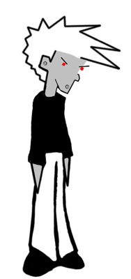

ROBO-FLOYD

Robo-Floyd is Floyd's robotic clone gone mad. Once finished, Floyd thought that Windows 98 with all it's supposed features and special functions would be the best operating system for a robotic version of himself to run on. Unfortunately for Floyd, things went horribly awry and as usual Microsoft showed how shoddy it's products really are. Apparently the combination of an android positronic brain and Windows 98 produced a robot that instead of protecting his master from the evil two dimensional robot of destruction Tor as instructed, instead joined forces with that evil and is now determined to kill Floyd as well. This only proves further that Bill Gates really is the devil...